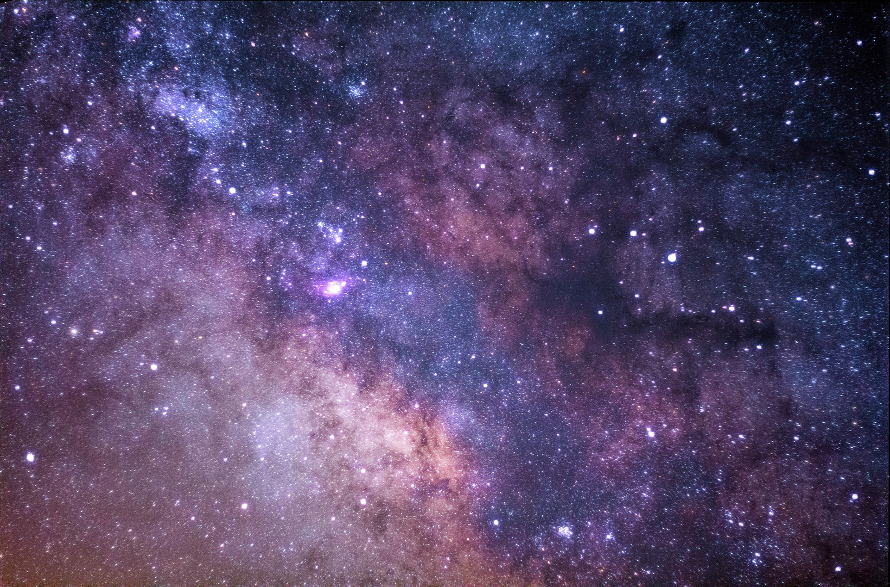
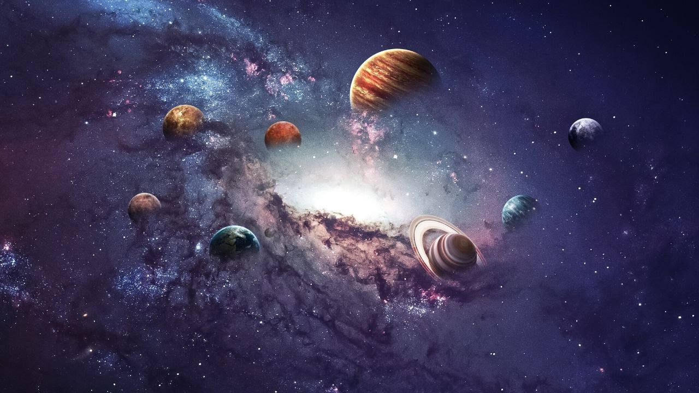
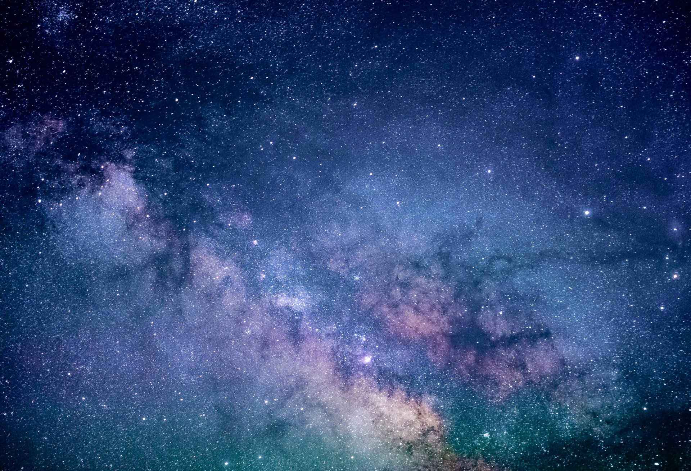

Espaço

Espaço sideral é toda área vazia do universo que não está ocupada por corpos celestes. No ambiente do espaço sideral, além dos corpos celestes, habita poucas partículas, como plasma de hidrogênio e hélio, campos magnéticos, neutrinos, radiação eletromagnética, bem como poeira interestelar e raios cósmicos.
Entretanto, todas essas partículas e qualquer corpo celeste no espaço sideral, representam apenas 5% de tudo o que existe no universo.
O universo é constituído, predominantemente, de matéria escura (25%) e energia escura (70%). As propriedades ainda não são conhecidas, sendo o grande mistério que leva os astrônomos a uma busca interminável para explicar o espaço sideral.

Assim como diversas questões a respeito do espaço sideral, o tamanho do universo é uma pergunta difícil de responder. Por exemplo, não se sabe se existe algo além do que os telescópios existentes conseguem detectar.
Contudo, os estudos existentes até o momento, não conseguem definir um tamanho exato. O espaço sideral pode ter uma medida, e mesmo assim, ser infinito.
Para exemplificar melhor, podemos chamar de “universo observável”, que é o termo que os cientistas usam para medir o que podemos enxergar no espaço, com a tecnologia que temos.
De acordo com o Big Bang, tudo o que conhecemos existe há 13,8 bilhões de anos-luz. Logo, o diâmetro do universo observável representa algo em torno de 27,6 bilhões de anos-luz? Na verdade, não.
Acontece que o universo está em expansão de forma acelerada. Por conta disso, cientistas acreditam que o diâmetro do universo observável é estimado em 93 bilhões de anos-luz. Além disso, seu formato seria plano e sua projeção, infinita.

Não há uma clara definição dos limites do espaço em relação à Terra ou mesmo de sua extensão. A linha de Kármán, contudo, uma estimativa de altitude de 100 km (62 mi) acima do nível do mar,[7] é consensualmente entendida como o "início" desse ambiente, sobretudo em tratados espaciais e registros aeronáuticos e astronáuticos. Um quadro legal foi estabelecido pelo Tratado do Espaço Exterior, aprovado pela Organização das Nações Unidas em 1967, com 98 países signatários e outros 27 assinantes. Esse postulado impede qualquer reivindicação de soberania nacional sobre o espaço e permite, a todas as nações, sua livre exploração. Apesar da elaboração de resoluções, por parte da ONU, tratando do uso pacífico desse ambiente, armas antissatélite têm sido testadas na órbita do planeta.

A humanidade iniciou a exploração física do espaço no século XX,[8] com o advento dos balões de grande altitude, seguido por desenvolvimentos tecnológicos que vieram a propiciar, décadas depois, o lançamento de foguetes espaciais (ver: História dos foguetes). O alcance da órbita geocêntrica foi conseguido pela primeira vez por Yuri Gagarin, da União Soviética, em 1961.[9] Desde então, espaçonaves não tripuladas têm viajado por todos os planetas do Sistema Solar. Em decorrência do alto custo para a execução de viagens tripuladas, tais missões têm se limitado à órbita terrestre baixa ou à Lua. O espaço sideral representa o que há de mais desafiador à ciência e perigoso à exploração humana, sobretudo pela complexidade desse ambiente e pelos riscos e ameaças do vácuo e radiação. A microgravidade, por exemplo, tem um efeito nocivo à fisiologia humana. Questões de saúde, ambientais, econômicas e tecnológicas têm colocado em cheque o progresso da atividade, muito embora a evolução científica que esse tipo de exploração pode proporcionar seja considerada inestimável.